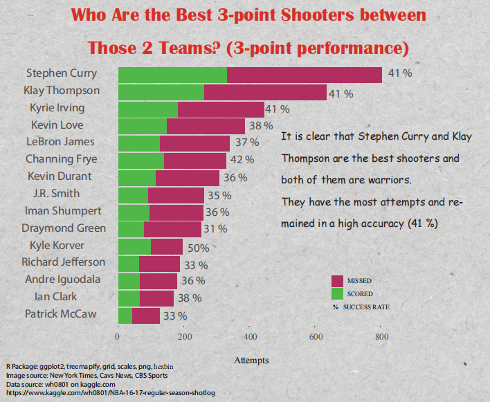

3-pointer Performance
What information is underneath the plot:
This column chart illustrates 3-pointer performance and I filtered the 15 players between those 2 teams because their attempts are enough to be analyzed. The size of each column represents the number of 3-pointers attempted, the green part represents successful shots, and the red part represents unsuccessful shots. I also put shot percentage. The plot shows clearly that the Warriors has better shooters: the size of Stephen Curry’s column is way beyond other players, over 800 attempts and he still has 41% success rate, which is very high. Klay Thompson is not far behind, approximately 600 attempts and 41% success rate as well as Steph. From 3rd to 6th are the Cavs’ Big 3, then Kevin Durant, who shoots more mid-range shots rather than 3-pointers.
Conclusion:
There is not doubt the Warriors have best shooters duo. It is clear that Stephen Curry and Klay Thompson are the best shooters and both of them are warriors. They have the most attempts and remained in a high accuracy (41 %)